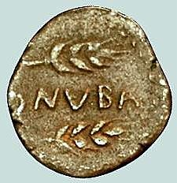

Huelva is a port city in southwestern Spain, at the mouth of the Odiel and Tinto rivers. North of the center is whitewashed Santuario de Nuestra Señora de la Cinta chapel, dating from the 15th century. Huelva Museum hosts an extensive archaeological collection. La Merced Cathedral features a striking baroque facade. A statue of explorer Christopher Columbus overlooks the palm-flanked square of Plaza de las Monjas.
The city may be the site of Tartessus; it was called Onoba by the Phoenicians. The Greeks kept the name and rendered it Ὄνοβα. It was in the hands of the Turdetani at the time of conquest by Rome, and before the conquest it issued silver coins with Iberian legends. It was called both Onoba Aestuaria[5] or Onuba (used on coinage) during Roman times, or, simply, Onoba.[6] The city was incorporated into the Roman province of Hispania Baetica. According to the Antonine Itinerary, it was a maritime town between the rivers Anas, (modern Guadiana) and Baetis (modern Guadalquivir); it was situated on the estuary of the River Luxia (modern Odiel), and on the road from the mouth of the Anas to Augusta Emerita (modern Mérida). There are still some Roman remains. The city had a mint; and many coins have been found there bearing the name of the town as Onuba.[8] Modern inhabitants are called Onubenses in Spanish. Part of a large wooden wheel that was originally used to drain a copper mine in Huelva was discovered in the late nineteenth century. Dating to the Roman times, it was donated by the British mining company Rio Tinto to the British Museum in 1889.
Soon after the beginning of the Umayyad invasion of the Iberian Peninsula in 711, Onuba was seized by the troops of Musa ibn Nusayr by April 712. The Arabs then called it Walbah. During the fitna of al-Andalus a weak and ephemeral taifa emerged following the demise of the Umayyad control over the area: the bakrid taifa of Saltés and Huelva, longing from 1012 to 1051, when it was annexed by the more powerful Taifa of Seville, to be later occupied by the Almoravids in 1091. By 1262, the city —then part of the Taifa of Niebla— was taken by Alfonso X of Castile. Following the Christian conquest, the city became a realengo for a brief spell until it was ceded in Lordship to Admiral Juan Mathé de la Luna [es] in 1293 by Sancho IV of Castile. After a spell during which Huelva was probably controlled by Seville, the tenency of the lordship was passed to several lords, including Alonso Meléndez de Guzmán —brother of Eleanor de Guzmán— (in 1338) and Juan Alfonso de la Cerda (c. 1344). Huelva, again a realengo for a small period during the reign of Peter I, saw its privileges confirmed and was granted the right to choose the alcalde and the alguacil in 1351. The lordship was soon given to King's Mistress María de Padilla.
Mines in the countryside send copper and pyrite to the port for export. From about 1873, the most important company in the area was Rio Tinto, the British mining firm. New pier-jetty of the Minas de Riotinto railway station, about to be opened in 1876. The mining operations caused severe sulfur dioxide pollution and were frequently accompanied by protests of local farmers, peasants and miners, allied under the anarchist syndicalist leader Maximiliano Tornet. On 4 February 1888, the Pavi Regiment of the Spanish Army opened fire on demonstrators at the village plaza of Rio Tinto. Historians estimate the number of deaths between 100 and 200. Environmentalists from the nearby Nerva village referred to 1888 as the "year of shots" a hundred years later in their protests against the province government's plans to site a large waste dump in a disused mine in the 1990s. The local football club, Recreativo de Huelva was founded in 1889 by workers of Rio Tinto Group, a British mining company. Nicknamed the "Dean" of Spanish football, it is the longest living football club in the country. The 17–18 July 1936 military coup d'état that started the Spanish Civil War failed in the city and much of the province. However, on 27 July 500 guardias civiles rose in arms against the Republic in the city, with the authorities escaping and later being shot down. Two days later, on 29 July, a rebel column from Seville on behalf of Gonzalo Queipo de Llano took control of the city.[19] For the rest of the conflict it remained to the rear of the zone controlled by the Rebel faction. The ensuing Francoist repression took a heavy toll, with an estimated total of 6,019 deaths all over the province for the rearguard and post-war repression. During World War II, the city was a hub of espionage activities led by members of the large British and German communities. German activity centered on reporting British shipping moving in and out of the Atlantic. Most famously, the city was the location where Operation Mincemeat allowed a body carrying false information to wash ashore. 25 years after the city was declared a Polo de Desarrollo Industrial ("Pole of Industrial Development") in 1964, the population had nearly doubled. On 11 October 2005, Hurricane Vince made landfall in Huelva as a tropical depression.